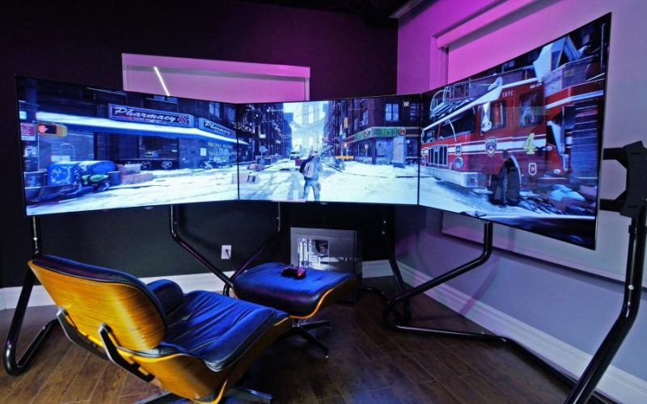
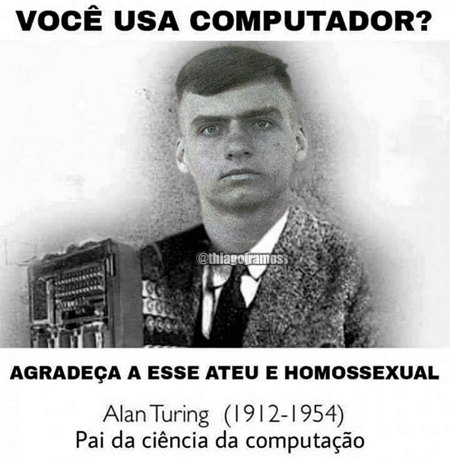

Período Pós 1996

Para finalizar os artigos sobre o histórico das redes de
computadores, temos 1996 em diante. Com a enorme evolução
do serviço em redes tanto em empresas como em lares surgiram
além das redes Ethernet que são redes locais, redes Intranet
que são redes locais ligadas a grande rede mundial, muito
utilizada pelas empresas hoje para diversos fins , como
comunicação com filiais, comunicação entre setores através
de um sistema em rede etc.
A grande rede formada por redes menores é hoje o componente
mais importante na área da comunicação a popular e grande rede
global de computadores a Internet, ainda não parou de crescer
e com certeza não parará, pois o número de usuários tanto para
fins empresariais como pessoais aumenta a cada dia, pois, hoje
o custo para aquisição, ou acesso a uma rede é menor e tende a
ficar cada vez mais barato, e ainda as maiores dificuldades seriam
condições técnicas.
Não podendo esquecer que a grande rede ainda continua com os 3
protocolos TCP, IP e UDP criados no fim da década de 70, é claro
que aperfeiçoados. As estatísticas apontam que hoje há no mundo
em torno de mais de 900 milhões de usuários devido a grande utilidade
no gerenciamento empresarial, na políticas, nas residências, escolas,
projetos de inclusão digital e em fim na sociedade em geral e que o
acesso hoje além do computador ocorre pelo celular, PDAs e outros.
A rede sempre irá mudar, devido a demandas do tempo e do mercado, pois
o tempo passa e os recursos devem passar também, é claro que os recursos
úteis sempre irão ficar. Se formos analisar blogs, vídeos, chats, msn,
pesquisas, sites de relacionamentos entre outros são a base da internet hoje.
